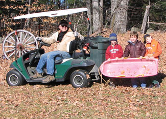

We were in need of a utility transport vehicle for gardening and field chores. Our homestead is on the side of a steep hill in Cornish, N.H. The main impetus for getting a utility vehicle was the long climb back up the hill from where we do all of our vegetable gardening and backyard recreation. All the fun seems to go out of gardening after two or three long trudges back up the hill for refreshment breaks and/or various gardening tools and supplies.
We wanted an economical and eco-friendly solution, so we purchased a 1996 EZ-GO two-wheel-drive electric golf cart. It came with a canopy and heavy duty 6-volt charger. The cost for the cart was $1,500, delivered. Options added included a rear view mirror ($10), reflectors fore and aft ($10), a homemade trailer hitch ($5) and a set of all-terrain tires on new rims ($250). We invested in a technician’s repair and service manual ($49) and diagnostic meter ($70) - both worth every penny.
We replaced the set of six deep cycle, 6-volt batteries ($400) after owning the golf cart for two years. We have found that proper battery maintenance will give a five-to-seven-year battery service life. The electrical system includes a special feature that uses the electric motor as a speed limiter on steep grades, reversing current to recharge the batteries. Charging time is overnight, and our electric utility vehicle will work a full day on a full charge.
The utility vehicle is an integral part of our gardening routine, carrying all the supplies. At garden-side, it provides a place to sit and rest out of the sun. And we use it as transportation to visit neighbors. We appreciate that the utility vehicle is utterly silent and there are no fuel fumes or exhaust clouds.
A 40-gallon, rectangular trash barrel is mounted where the golf bags would go, held in place by the golf bag’s retainer straps. The cart is up to hauling whatever fits in the barrel. The empty cart, with batteries installed, weighs about 900 pounds, and has a load capacity of 800 pounds. There is good torque and quick acceleration to a top speed of 12 to 14 mph.
The most enjoyment we get from the utility vehicle is when we sit together watching the sunset. There is also the pleasure of giving rides to the neighborhood children and tired dogs who stop by for a visit. We have rigged up a sled on a rope and started the sport of grass surfing, but that’s another story.
|
 RICK MELLOH This golf cart is a practical, economical electric vehicle. |
|
|